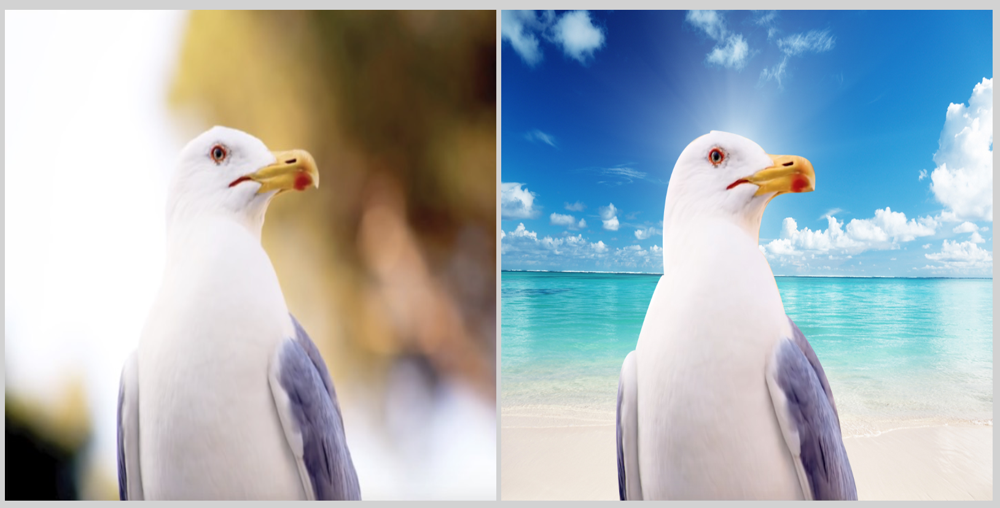

My Portfolio
1. An example of how I made a choice related to genre or audience.
2. An example of how I made a choice related to color, fonts, captions, scale, or other aspects of the visual mode.

3. An example of how I made a choice related to comparing one thing to another.
4. An example of something that frustrated me or took a larger amount of time than I would have liked.

5. An example of something I am particularly proud of.